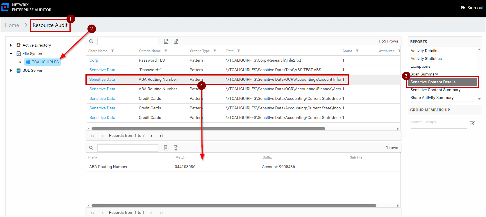
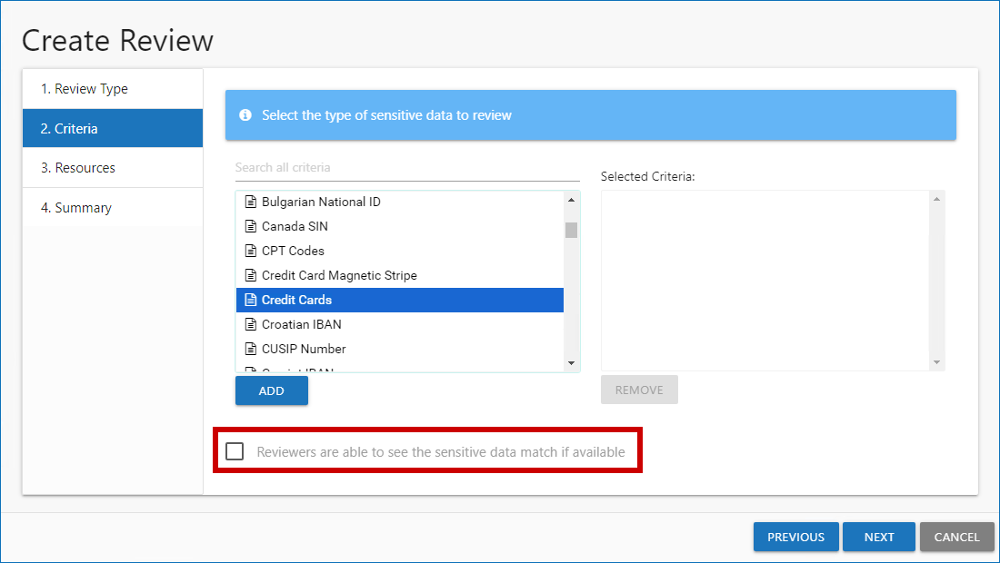

Question
How can you view stored Sensitive Data Discovery (SDD) matches in FileSystem Sensitive Data (SEEK)?
NOTE: To be able to view populated Sensitive Content Details reports, enable the Store discovered sensitive data option for the corresponding collector in Sensitive Data Settings. For additional information on the initial SDD setup in specific collectors, refer to the following documentation section: Administration − Data Collectors · v11.6.
Answer
NOTE: The Sensitive Data Discovery criteria searches in Access Information Center can be run exclusively by users with either the Security Team or Console Administrator role. Users with the Reader role will receive blank reports.
-
Access Information Center − Sensitive Content Reports
-
Select the server.
-
In the right Reports pane, select Sensitive Content Details.

For additional information, refer to the following article: Resource Audit Overview − Sensitive Content Reports · v11.6.
-
-
Access Information Center − Resource Review
-
Assign Resource Owners. Refer to the following article for additional information: Resource Owners Overview · v11.6.
-
Create a Sensitive Data Resource review. Refer to the following article for additional information: Resource Ownership with the Access Information Center − Perform a Sensitive Data Review · v11.6.
IMPORTANT: Check the Reviewers are able to see the sensitive data match if available checkbox for the review to contain sensitive data matches.
 -
-
Enterprise Auditor − Custom report
-
Create a new report under the FileSystem > 7.Sensitive Data > FS_DLPResults Job.
NOTE: For additional information on custom reports, refer to the following article: Reporting − Report Configuration Wizard · v11.6.
-
In the Authoring page of the Report Configuration Wizard, specify the report name and title.
-
In E-mail and Publish Security pages, specify the recipients and intended audience for the report − refer to the following articles for additional information: Report Configuration Wizard − E-mail Page · v11.6 and Report Configuration Wizard − Publish Security Page · v11.6.
-
In the Layout page, select the single block option and set the Select the number of rows counter to 1 row.
-
In the Widgets page, configure the report layout − refer to the following article for additional information: Report Configuration Wizard − Widgets Page · v11.6.
-
In the DataSource Options window, uncheck the Current Job Only checkbox and select the SA_FSDLP_MatchHitsView table.
NOTE: You can omit the data columns included in the report via Column Chooser.
-
After saving the report, you can generate it either by clicking the three-dot icon (the More button) > Generate, or by running the FS_DLPResults Job.
-